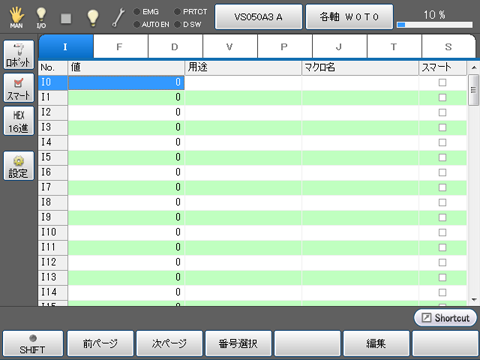
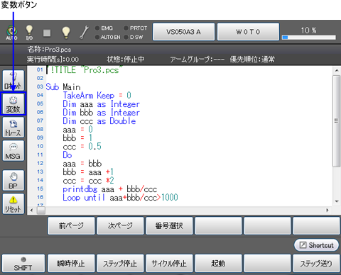
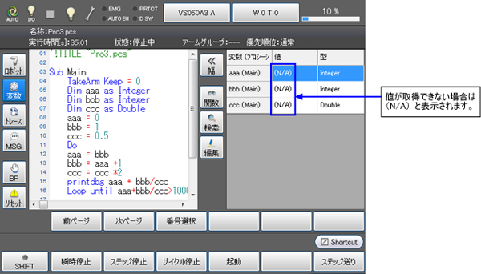
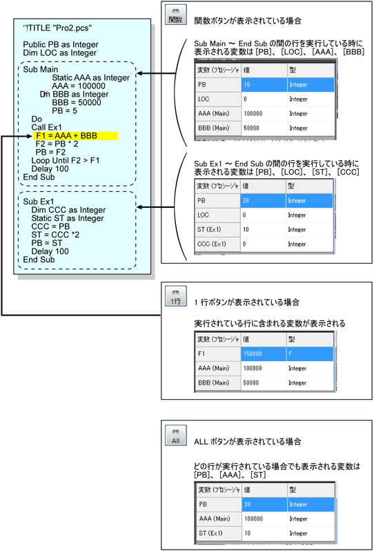
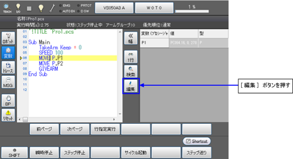
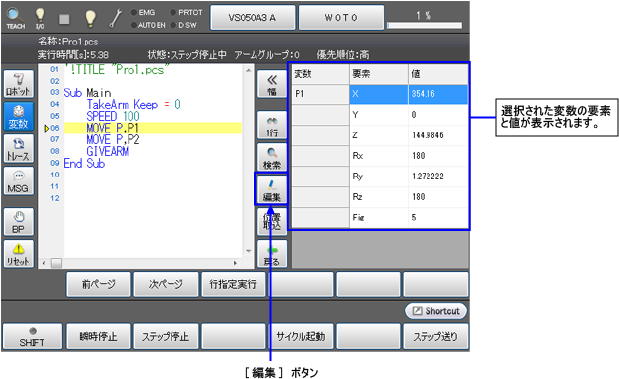
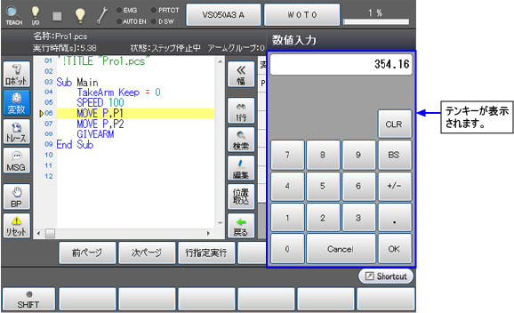
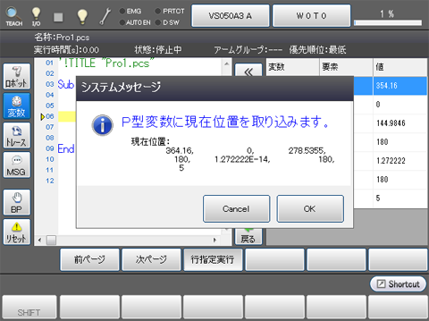
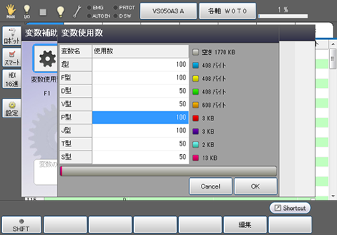
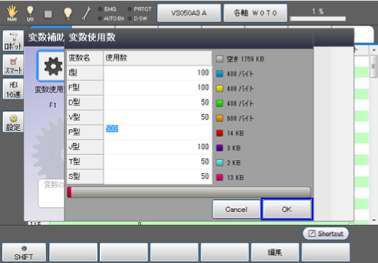

ID : 5267
ティーチングペンダントによる操作
グローバル変数のモニタリングと値変更
操作経路： [基本画面] – [F3 変数]
各種変数の値や使用中の変数をモニタリング・変更します。
1
基本画面で [F3 変数]を押すと、下図の[変数]ウィンドウが表示されます。

ロボット形式が付加軸仕様の場合、[付加軸]ボタンがサイドバーに表示されます。
[付加軸]ボタンをクリックすると、画面下にロボット軸と付加軸を選択する画面が表示されます。
2
モニタリング又は変更したい変数のタイプを選択します。
表示したい変数のタブを押すと、目的の変数が表示されます。
| ファンクションキー以外のキー | |
|---|---|
| [ロボット] | 画面の右側にロボットの現在位置情報を表示します。 ボタンが押されている時は、ボタンが青色に点灯します。 |
| [スマート] | 各変数において、[スマート]のチェックボックス欄にチェックを入れた変数番号のみを表示します。 |
| [16進] | 16進の値が入力できる変数では、このボタンを押すことで16進表示に切り替えができます。 ボタンが押されている時は、ボタンが青色に点灯します。 |
| [設定] | それぞれの変数の使用数を設定します。 ボタンを押すと、[変数使用数]ウィンドウが表示されます。 使用数を変更したい変数を選択した後、[F4 編集]を押すとテンキーが表示されますので、テンキーを使用して設定数を入力し、テンキー上の[OK]を押すと、使用数が変更されます。 変更した使用数は、[変数使用数]ウィンドウの[OK]ボタンを押すことで変更が確定します。 |
| [変数タブ] | 表示したい変数のタブを押すと、目的の変数が表示されます。 |
| 使用可能なファンクションキー | |
|---|---|
| [F1 前ページ] | 現在表示されている変数ページの直前のページを表示します。 |
| [F2 次ページ] | 現在表示されている変数ページの直後のページを表示します。 |
| [F3 番号選択] | 変数タブで表示する変数を選択後、[番号選択]を押すとテンキーが表示されます。 選択された変数番号は、要素の一部が反転表示されます。 |
| [F4 移動] | 変数番号を指定して、その指定した変数番号に登録されている座標値にロボットを手動で動かします。 J型、T型、P型の変数の場合のみ操作できます。 |
| [F5 編集] | 数値を変更したい変数番号を選択して[編集]を押すと、テンキーが表示されます。 T型、P型の各変数については、ロボットの動作形態（Fig）を設定することができます。 |
| [F6 位置取込] | ロボットの現在位置を指定した変数に取込みます。 J型、T型、P型の変数の場合のみ操作できます。 |
| [F8 コピー] | 変数の値をコピーします。 コピーしたい変数番号を選択し、[コピー]を押すと、変数がコピーされます。 |
| [F9 貼り付け] | コピーした変数を貼り付けます。 |
| [F10 表示切替] | [オプション]ウィンドウが表示されます。 [オプション]ウィンドウでは、「スマート表示」への切り替え、10進数と16進数の表示切替が変数ごとに設定できます。 |
| [F11 ロボット] | 画面の右側にロボットの現在位置情報を表示します。 |
| [F12 補助機能] | [メニュー]ウィンドウが表示されます。 [メニュー]内の[変数使用数]を選択すると、[変数使用数]ウィンドウが表示されます。 使用数を変更したい変数を選択した後、[F4 編集]を押すとテンキーが表示されますので、テンキーを使用して設定数を入力し、テンキー上の[OK]を押すと使用数が変更されます。 |
ローカル変数のモニタリングと値変更
プログラムテキストが表示されている画面の左側に、変数ボタンがあります。
変数ボタンを押すと、実行中のプログラムで使用されている変数が表示されます。
1
変数ボタンを押す。

2
画面右側に変数の画面が表示されました。

この画面では、グローバル変数とローカル変数の全ての値と型を見ることができます。
但し、オブジェクトとVariant型の配列を見ることはできません。
- 「全ての変数型」は以下を含みます。
Integer(Long) / Single(Float) / Double / String / Vector / Position / Joint / Trans / DefIO / Object - エラー発生時、ローカル変数の値を見ることができます。(Ver.1.13.*以降)
切替ボタンの操作
[関数]、[1行] 又は [All]のボタンを押すと、変数画面の表示方法が変更されます。
-
[関数]が表示されている場合
[関数]が表示されている場合は、現在実行中のプロシージャ内（「Sub」と「End Sub」の間)に書かれているローカル変数と、プロシージャ外のローカル変数が表示されます。
I型、F型、D型、V型、P型、J型、T型、S型、IO型、Variant型の変数が表示可能です。
-
[1行]が表示されている場合
[1行]が表示されている場合は、実行されている行に含まれる変数が表示されます。
I型、F型、D型、V型、P型、J型、T型、S型、IO型、Variant型の変数が表示可能です。
表示が[1行]の場合グローバル変数も表示されますが、[関数] 又は [All]ではグローバル変数は表示されません。
-
Allが表示されている場合
[All]が表示されている場合は、タスク内に含まれる全てのスタティック変数（Publicで宣言されている変数と、Staticで宣言されている変数）が表示されます。スタティック変数とパブリック変数に関する説明は、プログラマーズマニュアルの「変数の種類と使用上の注意」を参照してください。
＃Includeで呼び出されるプログラムに含まれるスタティック変数も表示されます。Include の詳細についてはプログラマーズマニュアルの #Include をご覧ください。
変数のINDEXが範囲外、および数値でない場合、変数名のINDEX部が？で表示されます。
- I型変数の使用数が100であるのにI101を表示しようとした。
- I [slotnum]のようにINDEX部がマクロ名である変数を表示しようとした。 INDEX部が?の場合I型、F型、D型、DEFIO型であっても値は表示されません。[編集/表示]ボタンを押し、目的のINDEXへ合わせてください。
表示例

変数の値を変更する
[編集]ボタンを押すことにより選択された変数が表示されます。
以下に示す画面は、P型グローバル変数P1を表示した例です。
この画面では値変更が可能です。
1
画面右側に変数が表示された状態で[編集]ボタンを押します。

2
変数の詳細が表示されます。
変更したい変数の要素を選択し、[編集]ボタンを押します。

3
表示されたテンキーを使って値を変更できます。

変数に現在位置を登録する
前記の「変数の値を変更する」のStep2で、P型、J型、T型の変数の場合は、[位置取込」ボタンが表示されます。このボタンを押すと、現在位置を変数に登録することができます。
ボタンを押すと、取込み確認画面が表示されますので、[OK]を押します。中止する場合は[Cancel]を押します。
グローバル変数の使用個数を変更する
各型のグローバル変数の使用個数を変更します。
経路：基本画面 - [F3 変数] - [F12 補助機能] - [F1 変数使用数]
1
変更したい変数を選択し、[F5 編集]を押すと、[使用数変更]ウィンドウが表示されます。
Static変数を使用している場合、Static変数の使用量も表示されます。

2
変更したい変数型をクリックし、値を入力して[OK]を押します。
ここでは値を500に変更しました。

CALSET位置の記録
設備の都合上でロボットをメカエンドまで移動できない場合、 任意の位置までロボットを移動し、その際の各軸角度を予めJ型変数に取り込んでおくことで、取り込んだ位置を参照してCALSETを行うことが可能です。(この機能はVer.2.8.*から使用可能です。)
任意の位置でCALSETを行う場合は、あらかじめマークを貼るなどして、内部の位置情報が失われても位置合わせが出来るようにしておく必要があります。
CALSETについての詳細は"CALSETの方法"を参照してください。
ID : 5267